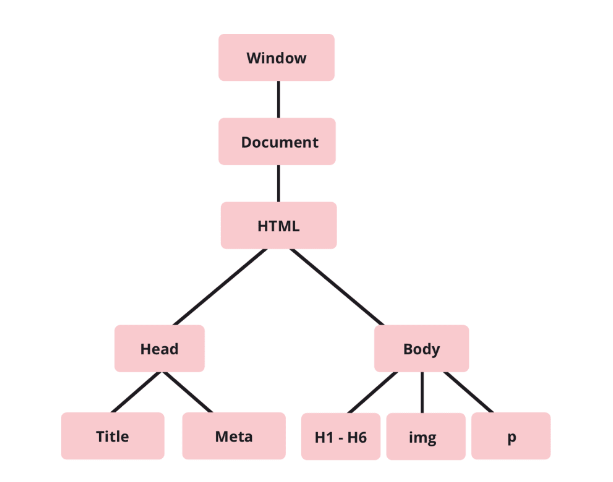
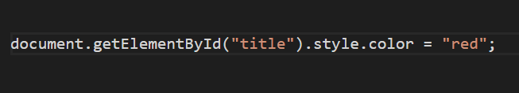
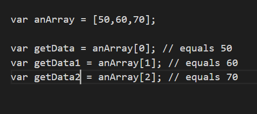
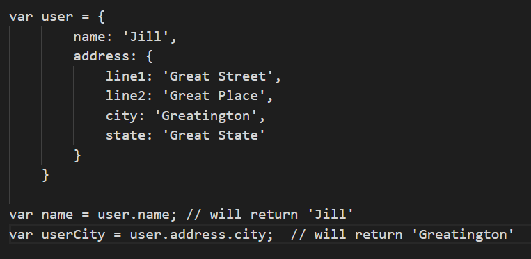
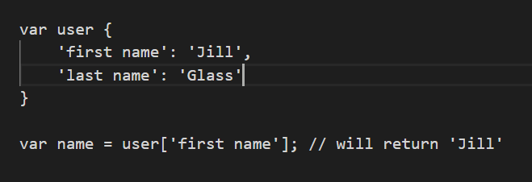
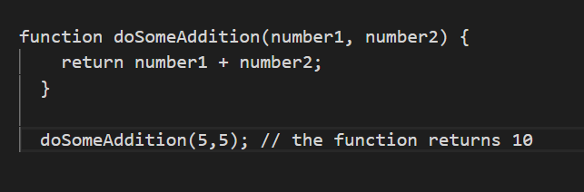

HTML, CSS, DOM, Loops, Arrays, Objects and Functions Overview
What are the differences between HTML and CSS?
I will use the analogy of a theatre play. The HTML is the actors. They stand around on stage saying their lines, sometimes saying them louder or quieter but not being very exciting. They get the plays meaning across to the audience but it would be great if there was some pizzaz added. This is where the director comes in. The CSS is like the director, who tells the actors what to do and where to stand. The director can also tell the actors what to wear, where to be, when to change what they are doing or saying.
What are Control flow and Loops?
Control flow and loops can be explained using the example of vacuuming. First, you need to go and get the vacuum cleaner from where it is kept. You can vacuum without getting the machine. You then plus the vacuum in in the wall to give it power. This is like control flow. Control flow is the order in which the javascript will execute, it runs from top to bottom unless otherwise instructed. Getting the vacuum cleaning out ready for use also needs to be done in the correct order otherwise you won't have anything to plug in or vacuum with.
A loop allows you to run an instruction over and over for as many times as you require. To vacuum, you are required to push the head out, then in, then out, then in, to pick up all of the dust and dirt. If I were to write 'push in, push out' in javascript, to describe everytime I pushed the vacuum, it would take up 100's of lines. To simplify this, you can create a loop, which runs through a line of code, completes the instruction, then runs through it again for as many times as instructed. Our brain creates a loop itself when we are vacuuming. We don't think, 'I must push the vacuum away from me then pull it towards me' for every arm movement we do. Our brain automates this process and our arm moves without conscious thinking, freeing up our brain for other tasks while we are vacuuming. Our brain builds its own loop.
What is the DOM and how do you interact with it?
DOM is an acronym for Document Object Model. The DOM is a representation of the HTML page and a programming interface, allowing scripting language to change the structure, style and content of a page. It has a tree-like struture, represented in the image below.

One of the ways in which you can interact with the DOM is with javascript. You may want to change the colour of some text when a user interacts with it (this interaction may be a mouse over, click, double click - there are many different options available to use). To change the colour of the text you need to point to where the text is located and then state what needs to be changed.

The above line of code states that the document is being targeted, then the specific element (specified by ID name) within that document. The javascript then states that the style needs to be updated, specifically the colour, which should change to red.
How do you access data from arrays and objects?
To access data from an array you use indexes. Array indexing starts from 0, therefore to access the first item in an array you would need to state nameOfArray[0]. Arrays also use bracket notation, therefore the index numbers will need to be inside [brackets]. The example below shows how to access the data from an array using indexes.

To access data from an object you use dot notation. Using dot notation you can move further into the object, accessing nested values. The below example shows that to access the name 'Jill', you will need to first access 'user' then the 'name'. With the example for returning the value of the city, you use dot notation to move further into the nested object, moving through user, address and city.

You can also use bracket notation to access objects. You will need to use bracket notation if the property you are trying to access possesses a name with a space in it. If it has a space, such as in the example below, you will need to use bracket notation as dot notation will not work with spaces.

What are functions and why are they useful?
Functions are a set of statements that perform a task in javascript. Functions consist of a name, any parameters, and a block of statements to be executed. Functions are useful as they can be used over and over again, by calling the function name. By reusing functions you simplify your code and Don't Repeat Yourself (DRY), a mantra used by developers. Below is an example of a simple function that takes two parameters (number1, number2) and adds them together. By calling the function doSomeAddition(5,5) with the arguments of 5 and 5, we are asking the function to add 5 + 5 together and return the answer.
